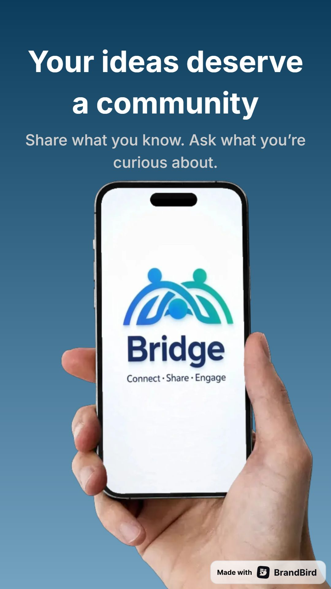
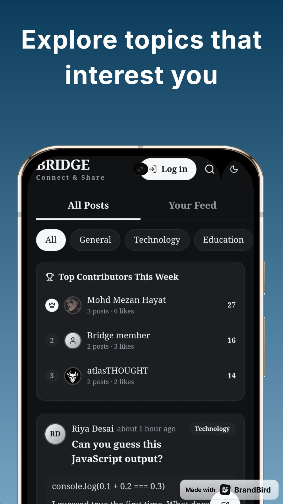
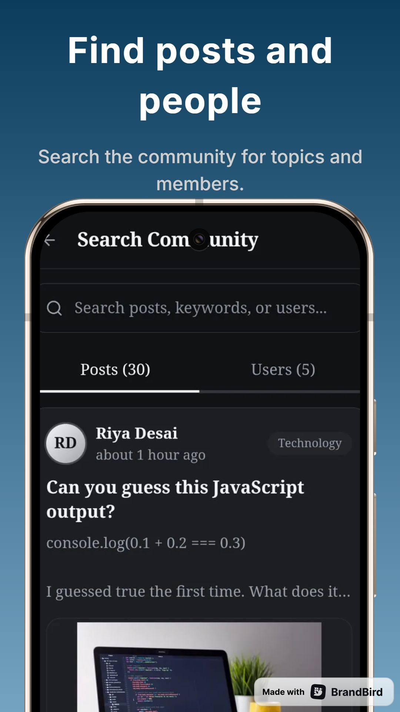
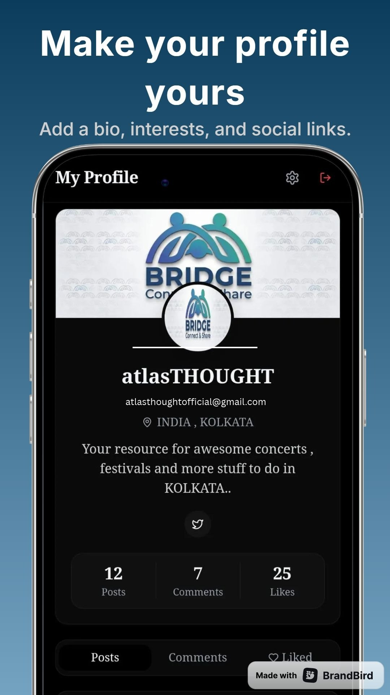

atlasTHOUGHT
atlasTHOUGHT★★★★★
Junaidkhan12A37
“Something new to experience”
A friendly place for students and curious people to share knowledge, ask questions, and learn from each other.
Download BRIDGE - CONNECT & SHARE
BRIDGE brings community conversations and discovery together.
Create a profile with a bio, interests, and social links.
Share posts and images, comment, and take part in nested replies and voting.
Explore topics that interest you and search community posts and people.
Bookmark posts to return to them later.
Manage privacy from your account settings.
Report content or users and block people. Posts, comments and uploads are moderated.
Take part in daily challenges and see eligible community participation.
Sign in with Google, set up your profile, and join the community.
BRIDGE includes moderation and admin tools to support community safety.
App images supplied by atlasTHOUGHT.




“Something new to experience”
“Amazing app, It helps people connect with each other and share there thoughts.”
“Post Sharing Link is not working...”
Reply from atlasTHOUGHTThank you, Meher, for letting us know. We’re glad you’re using BRIDGE, and we’re sorry the post-sharing link isn’t working properly. We’re looking into the issue and will work to fix it...
Our mission and the people behind the app.
What data is collected and how it is used.
Rules and terms for using the service.
Our safety standards and reporting route.
Request account deletion information.
Contact the BRIDGE support team.